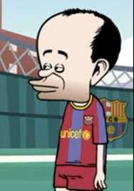

 Castilla-La Mancha, un gran lugar Y no podéis rechistar Cuidado, amigos, pues en el mundo no podréis encontrar Un sitio mejor pa' que uno viva Estoy tranquilo, esto mola un kilo En Fuentealbilla, el paraíso perdio' Si alguien dice que no, eso me ofende a mí Y también a su población Pues mi pueblo no se toca (toca, toca, toca) De paciencia tengo poca (poca, poca, poca) Si no calla de una vez la (boca, boca, boca) Se me vuelve la cabeza (loca, loca, loca)
El Wycombe Wanderers Football Club es un club miembro de la Asociación Inglesa de Fútbol con sede en la ciudad de High Wycombe en Buckinghamshire, Inglaterra. El equipo compite en la Football League One, la tercera división del sistema de ligas de fútbol de Inglaterra.